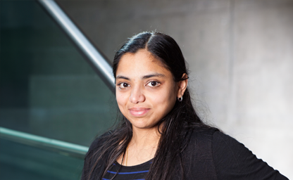

Dr Lakshmi Babu Saheer
Associate Professor in Artificial Intelligence
Anglia Ruskin University, UK
We welcome high-quality contributions on the application of machine vision to address climate change and sustainability challenges. Topics of interest include, but are not limited to:
1. Sustainable Built Environment
- Machine vision for sustainable infrastructure, transport and mobility planning
- Vision-based urban design and planning for sustainable cities
- Monitoring and optimizing renewable energy systems using vision technologies
2. Ecosystems and Natural Living Environment
- Automated monitoring of forests, land use, wildlife, and biodiversity
- Computer vision in precision agriculture, yield prediction, and crop health assessment
- Satellite and UAV imagery analysis for land cover and deforestation tracking
- Remote sensing techniques for climate monitoring
3. Climate and Weather Events
- Vision-based air quality monitoring and pollution mapping
- Vision-based earth observation monitoring
- Computer vision for early warning and response to natural disasters
- Visual data analysis for extreme weather prediction and climate-health correlation
- Vision based climate change adaptation and mitigation
- Machine vision applications for climate related public health
4. Vision Models Contributing to Climate Change
- Ethical AI, accountability, and bias mitigation in climate-related vision systems
- Energy-efficient and lightweight models for edge deployment (e.g., on drones)
- Explainable and interpretable vision models in environmental monitoring
- Improving energy utilization for vision model training
Associate Professor in Artificial Intelligence
Anglia Ruskin University, UK
Professor in Digital Innovation and Smart Places
Anglia Ruskin University, UK
Assistant Professor in Artificial Intelligence
Anglia Ruskin University, UK
Assistant Professor in Infrastructure Asset Management
University College London, UK,
Senior Lecturer in Construction Informatics
Oxford Brookes University, UK
Professor in Flood Monitoring and Detection and International Telecommunication Union (ITU)
Universidad de Colima, Mexico
David Rolnick is an Assistant Professor and Canada CIFAR AI Chair in the School of Computer Science at McGill University and a Core Academic Member of Mila. His work focuses on applications of machine learning to help address climate change, particularly in areas such as energy systems, biodiversity conservation, and climate policy. He is a Co-founder and Chair of Climate Change AI and Scientific Co-director of Sustainability in the Digital Age. Dr. Rolnick received his Ph.D. in Applied Mathematics from MIT. He is a former NSF Mathematical Sciences Postdoctoral Research Fellow, NSF Graduate Research Fellow, and Fulbright Scholar, and was named to the MIT Technology Review's 2021 list of "35 Innovators Under 35."
Dr Mehran Eskandari Torbaghan is an Assistant Professor in Infrastructure Asset Management at the Department of Civil Engineering with a Doctor of Philosophy (PhD) focused on risk management and linear infrastructure systems from University of Birmingham. Mehran spent five years in the civil engineering industry, as a geotechnical engineer, before returning to academia to study a master’s in construction management and then the PhD both at the University of Birmingham. He then worked as a research fellow at the University of Birmingham for around five years, before becoming a lecturer. Mehran has been engaged in supervising a number of PhD students. His research portfolio and interest lie in the field of smart management of infrastructure systems, investigating the application of robotics and autonomous systems for condition monitoring and repair of urban infrastructure.
Dr Manuel Herrera is a Lecturer in Hydrology at Newcastle University, where his research utilises AI, data-driven models, and complex network analysis to develop asset management and climate change adaptation strategies for water infrastructure. With expertise in AIoT and AI-driven decision-making for urban systems and the built environment, Dr Herrera's work extends to other critical infrastructure, such as communications and transport networks. A Fellow of the Royal Statistical Society (RSS) and a committee member of the RSS Special Interest Group in Statistical Engineering, Dr Herrera's contributions have earned him recognition, including being ranked among the top 2% of global researchers in 2021 by Stanford University, particularly in AI, Engineering, and Communication Technologies.

Dr Lakshmi is the director of the Computing, Informatics and Applications Research Group, with expertise in applications of artificial intelligence in the domains of climate change, net zero, air quality, vegetation/terrain identification, audio, speech, NLP, IoT and healthcare. She has numerous publications and prestigious awards to her credit including Google's Anita Borg award, and funding from UKRI, HomeOffice, and several EU (FP7, Eureka and Hasler Innovation start-up) funds. She is currently leading multiple climate action projects with Local Authorities in the UK.
All times are local to the workshop venue. Keynotes marked [online] will be delivered remotely.
| Time | Session | Details |
|---|---|---|
| 09:00 – 09:10 | Session 1 [Chair: Dr Manu Sasidharan] |
Introduction to Workshop Speaker: Dr Lakshmi Babu Saheer 10 min presentation |
| 09:10 – 09:45 | Session 1 (cont.) |
Invited Keynote Speaker 2 Speaker: Dr Manuel Herrera [online] 25 min presentation + 10 min Q&A |
| 09:45 – 10:45 | Session 2 [Chair: Dr Mahdi Maktabdar] |
4 Oral Paper Presentations 15 min per paper (10 min presentation + 5 min Q&A) View 4 Oral Presentations
|
| 10:45 – 11:15 | Break | Morning Coffee Break / Networking |
| 11:15 – 11:50 | Session 3 [Chair: Dr Lakshmi Babu Saheer] |
Keynote Session & Open Discussion Speakers: Dr Lakshmi Babu Saheer & Dr Manu Sasidharan Open Discussion on Machine Vision for Climate Change – 35 min |
| 11:50 – 12:30 | Session 3 (cont.) |
Invited Keynote Speaker 4 Speaker: Dr David Rolnick [online] 30 min presentation + 10 min Q&A |
| 12:30 – 13:00 | Session 4 [Chair: Dr Manu Sasidharan] |
Invited Keynote Speaker 3 Speaker: Dr Mehran Eskandari Torbaghan [online] 25 min presentation + 10 min Q&A |
| 13:00 – 14:00 | Session 5 [Chair: Dr Mahdi Maktabdar / Lorenzo Garbagna] |
Lunch + Poster Presentations + Networking 60 min View 4 Posters
|
Machine learning is increasingly being called upon to help address climate change, from processing satellite imagery to modeling Earth systems. Such applications represent an important frontier for ML innovation, where traditional paradigms of large, general-purpose datasets and models often fall short. This talk presents an application-driven paradigm for algorithm design, enabling models to respond to problem-specific goals and incorporate key domain knowledge. Novel techniques leveraging physical constraints, multi-modal self-supervision, and structural priors are introduced, improving model accuracy and usability. Applications span monitoring land use via remote sensing, modelling species distributions, and downscaling climate data—demonstrating how ML can be tightly coupled to the scientific challenges of climate resilience.
Floods represent one of the most significant consequences of climate change, requiring monitoring systems capable of both observing and understanding complex hydrological patterns. This talk explores how the next generation of climate-aware AI can unite perception and physics to deliver trustworthy environmental intelligence. Two complementary ideas underpin this vision. The first is Agentic AI, where CCTV-based vision models jointly operate with large language models (LLMs) to interpret multimodal data—imagery, rainfall, and water levels—to detect floods in real time. The second is the use of Physics-Informed Neural Networks (PINNs), which embed governing hydrological laws such as the Shallow Water Equations directly into the learning process. By combining contextual reasoning from LLMs with physics-grounded PINNs, AI systems can translate observed signals into physically meaningful parameters, aligning perception with fundamental science. This coupling represents a step toward Scientific AI: models that reason with context, learn from physics, and deliver reliable predictions for climate resilience.
Climate change is placing unprecedented strain on road networks: one-third of the UK network is currently at flood risk, a figure expected to rise to nearly half by 2050. Other extreme events—including heatwaves and intense rainfall—further damage pavements, embankments, drainage systems, and subgrades. This keynote introduces a holistic, data-driven asset management framework that integrates datasets on pavement condition, subsurface water, ground stability, and drainage asset performance. By examining interactions between road structures, the underlying earthworks, and drainage systems, the approach identifies hotspot locations where climate-exacerbated deterioration is likely to occur. The resulting model supports lifecycle planning, optimisation of maintenance budgets, identification of climate-vulnerable links, and development of a more resilient road network prepared for future environmental stress.
Submission Deadline: July 25, 2025 September 8, 2025
Notification of Acceptance: September 20, 2025
Camera-ready Submission: September 30, 2025
Workshop Date: November 27, 2025
The Machine Vision for Climate Change (MVCC) workshop follows the submission guidelines, template, and regulations of the British Machine Vision Conference (BMVC). For more information, please refer to the following link:
Please use the following link to submit your work through CMT submission system:
For any inquiries regarding the conference, please feel free to contact the organising committee at mvcc.bmvc@gmail.com. We are happy to assist with any questions related to submissions, registration, or participation.
The Microsoft CMT service was used for managing the peer-reviewing process for this conference. This service was provided for free by Microsoft and they bore all expenses, including costs for Azure cloud services as well as for software development and support.